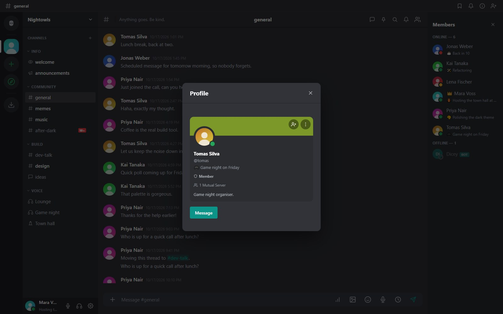
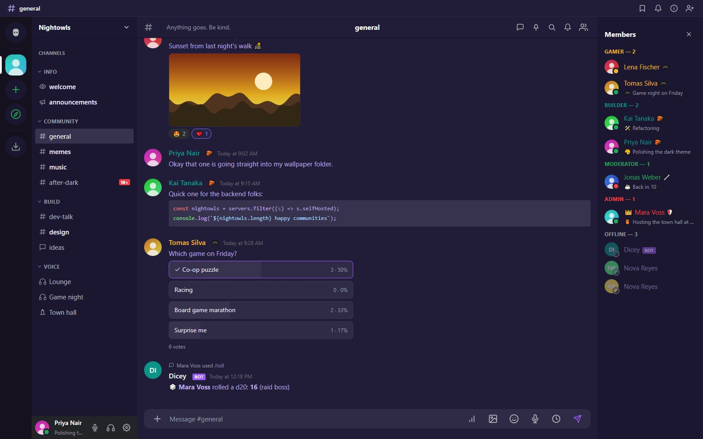

Profilok, státusz és témák
A profilkártyád, jelenlét és egyéni státusz, értesítési hangok, témák, elrendezés és nyelv.
A profilod
Nyisd meg a Beállításokat a bal alsó fogaskerékkel. Beállíthatsz avatárt, bannerképet vagy -színt, bemutatkozást és megjelenített nevet. A nevedre kattintva a többiek profilkártyát látnak.

Az adatvédelmi beállítások döntik el, ki küldhet neked privát üzenetet, és ki láthatja a profilkártyádat. Azt is megválaszthatod, megjelensz-e a felfedezési könyvtárban.
Jelenlét és egyéni státusz
Válaszd az Online, Tétlen, Ne zavarjanak vagy Láthatatlan lehetőséget, és adj hozzá egyéni státuszt emojival és szöveggel. Az /afk perjeles parancs üzenettel együtt tétlenre állít. Az értesítési hangok alapból a jelenléteddel követik egymást (online és tétlen csenget, a „ne zavarjanak” néma marad), és ezt fiókonként felülbírálhatod.
Témák
Minden tag a saját kinézetét választja a Beállítások, Megjelenés alatt. Indulj egy előbeállításból és igazítsd a színeket, vagy építs sajátot:
- Előbeállítások: MeshCrowd Dark, MeshCrowd Light, Midnight Purple, Forest, Sunset és High Contrast.
- Színek a márkaszínhez, a sávhoz, az oldalsávhoz, a csevegés hátteréhez és a szöveghez.
- Betűtípusok: alapértelmezett, talpas, egytávolságos és még néhány.
- Opcionális háttérátmenet (kezdő szín, záró szín és szög) az oldalsáv, a csevegés és a taglista mögött.
- A CSS másolása a témádat kivágatként exportálja, amit más is importálhat.

A témák egyszerű színekre és betűválasztásra vannak validálva. Sosem hordoznak tetszőleges CSS-t, így egy megosztott téma nem tölthet be külső erőforrásokat.
Elrendezés
Húzd a csatornalista és a taglista szélét az átméretezéshez; a méretek a fiókoddal együtt mentődnek. A szerversáv mappákkal rendezhető.
A MeshCrowd megnyitásakor
A Beállítások, Megjelenés alatt választhatod, mit mutasson az alkalmazás induláskor: a Kezdőlapot, vagy a Folytatás onnan, ahol abbahagytam opciót (az utoljára használt szerver és csatorna).
Olvasatlan üzenetek
Ha olyan csatornát vagy privát beszélgetést nyitsz meg, amelyben olvasatlan üzenetek vannak, egy piros vonal a dátummal és egy Új jelvénnyel jelöli az első olvasatlan üzenetet, és a nézet az aljára helyett oda ugrik. A vonal addig marad, amíg a csevegés nyitva van, és legközelebb már nem jelenik meg. Négy beállítás finomhangolja a Beállítások, Megjelenés alatt:
- Az „új üzenetek” vonal: megjelenítés vagy elrejtés.
- Olvasatlan üzenetekkel rendelkező csevegés megnyitásakor: ugrás az első olvasatlan üzenethez, vagy maradás a legutóbbinál.
- A vonal fölött látható üzenetek (0-tól 50-ig): mennyi környezet marad látható az első olvasatlan üzenet fölött az ugrásnál.
- Megnyitáskor betöltött üzenetek (20-tól 100-ig): hány legutóbbi üzenetet tölt be. Ha ennél több az olvasatlan, a vonal a betöltött oldal tetején jelenik meg, a többihez felfelé görgetsz.
A beállítások a fiókoddal együtt mentődnek, így a böngészőben, az asztali alkalmazásban és a telefonos felületen is érvényesek.
Nyelv
A felület magyarul és angolul beszél. A nyelvet a beállításokban, vagy a bejelentkező oldal választójából változtathatod. Az adminisztrátorok további nyelveket vehetnek fel az adminpanelen.
Nevek és becenevek
A szerver adhat neked becenevet, amely csak ott látszik. A szerveradminok tagonkénti névszínt állíthatnak be, ami felülírja a szerepkörszínt.